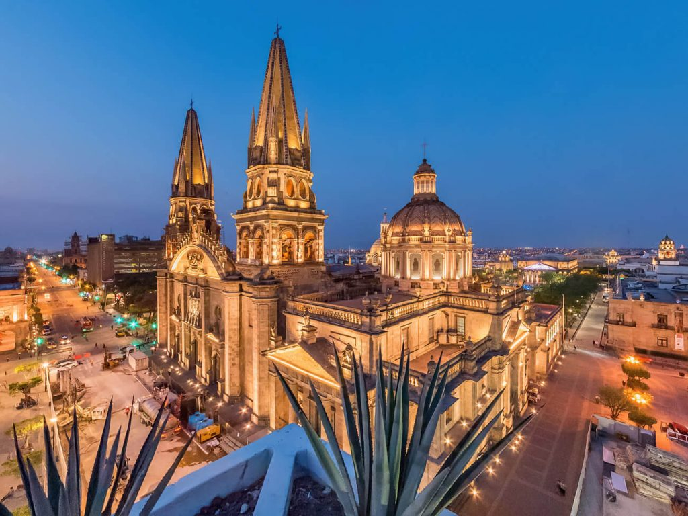
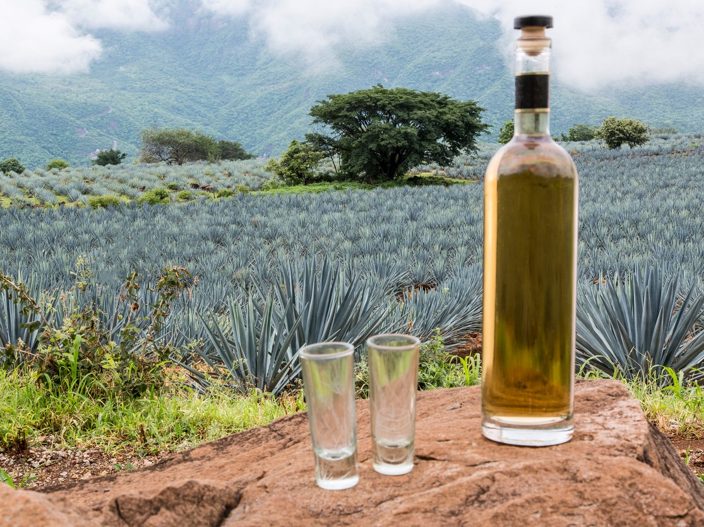
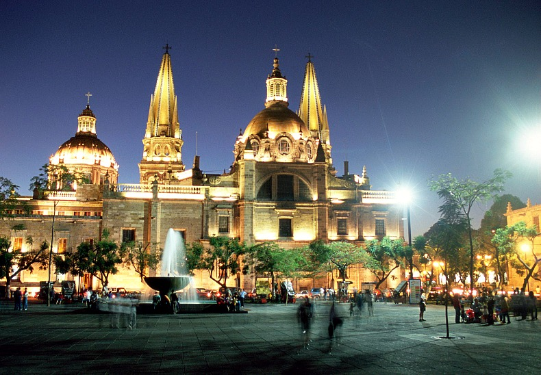

Una de las comidas más famosas del estado de Jalisco, México, es, sin duda, la birria. La birria es un guiso tradicionalmente hecho con carne de chivo o de borrego, aunque también puede prepararse con carne de res. Se cocina lentamente con una mezcla de especias, como chiles secos, ajo, comino y hojas de laurel, lo que le otorga un sabor rico y picante. La birria se sirve comúnmente en tacos o en un plato con cebolla, cilantro, limón y salsa picante. Es un plato muy popular en Jalisco y se puede encontrar en numerosos restaurantes y puestos de comida en todo el estado.

Jalisco es el hogar del famoso licor mexicano, el tequila.
La ciudad de Tequila, ubicada en
Jalisco, es donde se produce la bebida a partir de la planta de agave
azul. La región cuenta con numerosas destilerías y campos de agave, y
el turismo del tequila es una parte importante de la economía local.

Una majestuosa catedral de estilo neogótico ubicada en el centro histórico de la ciudad. Es uno de los principales puntos de referencia de Guadalajara y un lugar imprescindible para visitar.

Notas relevantes:
Origen del mariachi: Jalisco es la cuna del
mariachi, uno de los géneros musicales más emblemáticos de México.
Este estilo musical tiene sus raíces en la región y se caracteriza por
el uso de instrumentos como la guitarra,
la vihuela, el guitarrón, la trompeta y el violín, así como por sus
trajes de charro.
Un dato curioso sobre Jalisco es que alberga el lago más grande de
México, el Lago de Chapala. Este lago de agua dulce se encuentra en el
occidente de México, en la región de Los Altos de Jalisco.